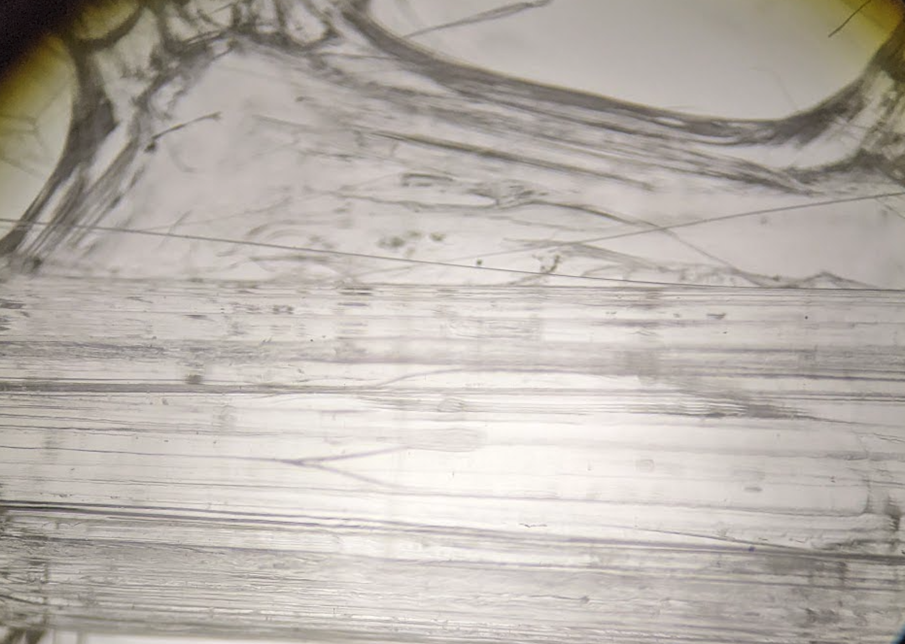
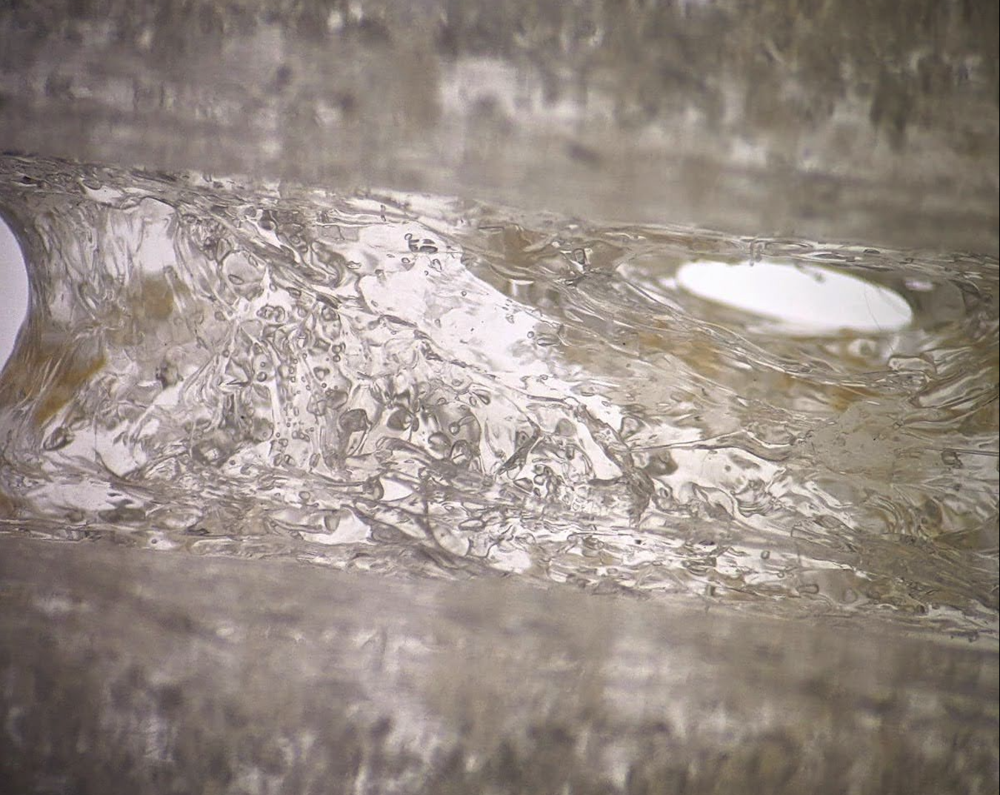
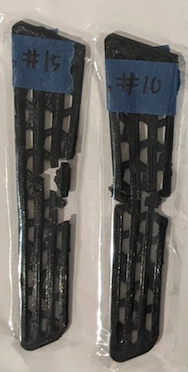

Multi-Material 3D-Printed Ankle Brace
This cast-to-brace intermediate utilizes the rapid protoypability and material diversity
of fused deposition modeling (FDM 3D-printing) to create an orthotic solution that aims to fill
the gap between rigid casts and less suportive braces.
Sections
Why?
This project was a part of Chapman University's Grand Challenges Initiative (GCI) program. Lasting my first and second years, it gathered students from the Fowler School of Engineering and Schmid College of Science and Technology together and formed groups to take on a grand challenge facing the world. My team was quite multidisciplinary: we had a Biology major, an Environmental Science and Policy Major, a Computer Science major, and a Computer Engineering major (me). We decided to take on the field of injuries and injury recovery. We identified a drawback in the conventional post-ankle injury recovery method, noting that its lack of customization hindered rehabilitation efficiency and raised the risk of re-injury. Our initiative sought to leverage the diverse and adaptable properties of 3D-printing and 3D-scanning to design a tailored ankle brace, ensuring an ideal fit for each user's foot. This brace incorporated two materials—one rigid for injury support and one flexible for comfort and mobility.
Besides working as the team leader, delegating tasks to my teammates, my primary specialty in this project was as the 3D modeler and manufacturer. Before this project, I had never worked with 3D-printers or 3D-modeling software. Through sheer will and determination (and lots and lots of YouTube videos), I learned how to consistently print complex mesh structures in many different materials (polycarbonate, PETG, TPU, etc.) and use Fusion 360 to model a unique brace around a 3D-scanned foot. In this article, I will only report on my contributions to this project. I will gloss over a few aspects of the project, such as initial brace designs, 3D scanning, and our research into how orthotics affect human physiology.
Polycarbonate Problems
 Figure 1  Figure 2 My first step in this project was determining which plastic material we would use. I first thought of using polycarbonate (PC) as the rigid material, so I set out to test it. I encountered a few issues, but the worst was moisture absorption. Like most 3D printable filaments, PC has an affinity for absorbing moisture from the air, especially in a humid environment. Microscopic air bubbles form in the filament, its optical clarity degrades, the filament burns while printing, and its structural integrity significantly weakens. Figure 1 shows a microscopic view of a normal print in transparent PC without any defects. Save for some slight streaking due to suboptimal print settings, the print is perfectly translucent. Figure 2 shows another PC print after the filament has been sitting out for a few weeks. The entire print is filled with bubbles and spotted with slightly browned burns, which could cause the entire print to fail.
Fixing this issue required drying the filament to drive out all the moisture. I placed it in a commercial filament drier and ran it at 70°C for over 12 hours. Even though this solution is convenient, it is not ideal since repeated heating and cooling cycles may deteriorate the material over time. A better long-term solution would be to always store the filament with silica desiccant packs or in a hot, dry environment.
Testing
After determining that I could manufacture the brace supports reliably, the team and I set out to test their mechanical properties. To choose which material we wanted to proceed with, we needed to determine the force required to damage each support permanently. Utilizing an Instron Universal Testing Machine, we used a 3-point bend rig to perform static flexure testing on each brace support of each material in the center until failure. We performed this test by supporting the brace at the edges and applying a load at its midpoint. After repeating each test 5 times, I averaged the data to generate one comprehensive stress-strain curve.
 PETG's fracture patterns By and large, the best material to proceed with would be PC. It can withstand a large amount of force, around 160N, before permanent plastic deformation and eventually fracturing. It has the longest elastic region (how much the material can bend before plastic deformation, shown under the linear region). It can also handle roughly twice the force of HIPS even though it is just as flexible, as shown by equivalent Young's moduli (the slope of the linear region of the curve). However, printing in it was just a pain. It does not like to cooperate, the print quality is temperamental if stored incorrectly, and it is challenging to print consistently. Therefore, we decided to proceed with our next best option: PETG. It is the most commonly used material of the three, is the stiffest (denoted by the steepest Young's modulus), and may be the best at resisting joint flexion. Nevertheless, it completely failed at its ultimate strength (the maximum stress the material can withstand, as shown by the testing video). This was not a concern in nominal conditions, however. According to a study on wrist flexion, the maximum wrist flexion torques of the average person was about 8 Nm[1]. We did not expect a human wrist to naturally exert enough force to bend the brace past a few millimeters of displacement.
Modeling and Prototyping
After choosing our rigid material and deciding that TPU was really our only feasible flexible material, I started 3D modeling the brace in Fusion 360. The initial prototype was meant to be put on almost like a sock, slipping on each section and tying it together with Velcro or some other strapping mechanism.
The mesh portion of the brace was to be made of our flexible material, and the triangular-ish supportive side pieces were to be made of our rigid material. In the design, one side is mesh, and the other is solid; I modeled it this way because we needed to determine which design would be best. The rigid support piece differed from the shape we tested, but we were stuck with the results since I started modeling the brace after deciding how to test the materials. I did not predict that the results would be significantly different relative to each other.
I deliberated with my team for a while and discovered that having too many splits in the brace would drastically reduce its performance. We doubted that our solutions for keeping the brace together would be strong enough to hold a compressive fit around the foot with so many potential failure points. Therefore, I modified the brace to print with a single split down the middle. The team also successfully scanned a human foot, so I could finally base this model on something real.
The Print
Near the completion of the GCI program, I was able to get a close-to-final print complete. The brace featured a combination of a brace body in TPU and support structure in PETG. The printing supports were a little more difficult to remove compared to something like PLA since the flexibility of TPU made it impossible to "break" off. The TPU and PETG were attached together using double-sided tape for purposes of demonstration, but we planned on using a two-part epoxy to make the bond permanent.
Retrospective
Although we won an Outstanding Project Award for our project, we could have improved quite a few things. For starters, spending more time tweaking the settings for the TPU print could have enhanced its print quality. We never did get to print the second half and strap them together since it was the end of the year. Finally, since this was still the first prototype based on a single foot, I could have done more work to create processes to fine-tune the size and thickness of the brace when modeling. Overall, I am happy with our progress, especially since I was the only person who knew how to use Fusion 360 and print in these unfamiliar materials effectively. I plan to pursue this project in the future as I continue developing my skills further and meet more peers interested in joining me in this project.